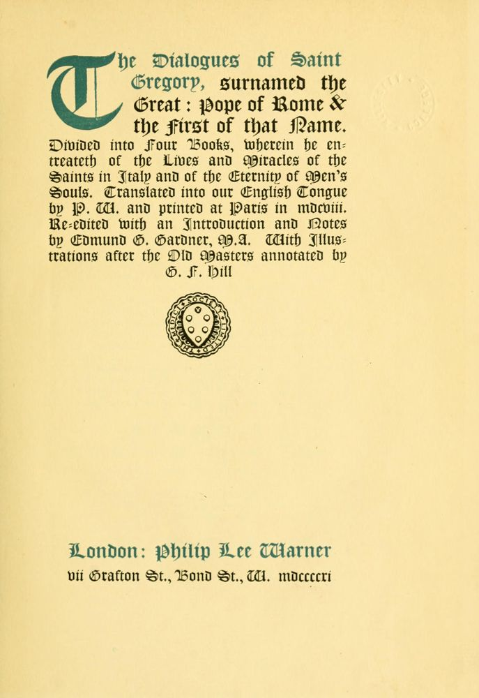
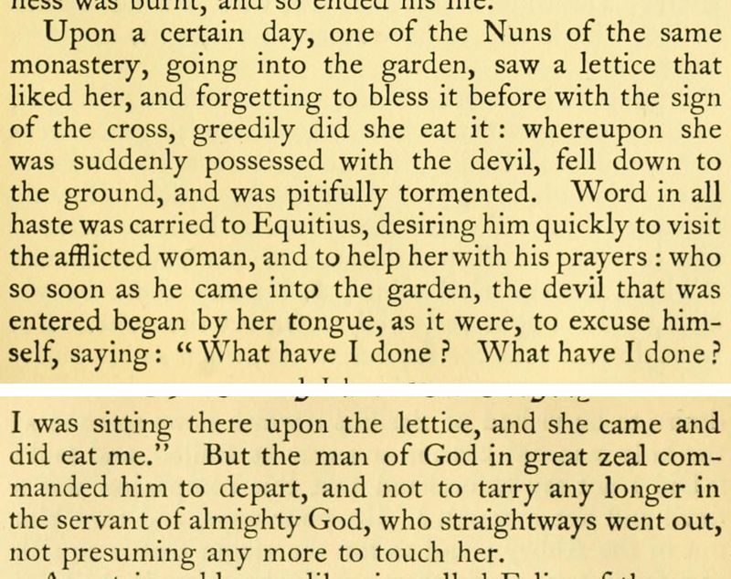

The nun and the lettuce (Book I, the chapter on Equitius)
English: the 1608 translation, ed. Gardner, London 1911, scans n56–n57. Spelling as printed. Highlighted: what Lecky summarises.

Upon a certain day, one of the Nuns of the same monastery, going into the garden, saw a lettice that liked her, and forgetting to bless it before with the sign of the cross, greedily did she eat it: whereupon she was suddenly possessed with the devil, fell down to the ground, and was pitifully tormented. Word in all haste was carried to Equitius, desiring him quickly to visit the afflicted woman, and to help her with his prayers: who so soon as he came into the garden, the devil that was entered began by her tongue, as it were, to excuse himself, saying: “What have I done? What have I done? I was sitting there upon the lettice, and she came and did eat me.” But the man of God in great zeal commanded him to depart, and not to tarry any longer in the servant of almighty God, who straightways went out, not presuming any more to touch her.

The paragraph just before this one ends with a sorcerer who, “through the zeal of good people, for his wickedness was burnt” in Rome. The same Equitius turns up in the Malleus Maleficarum as an example of a holy man freed from lust (Malleus page).
Further down the rabbit hole
Sources that Lecky cites in the notes next to the ones that cite this page.
- Tertullian, De spectaculisLecky’s Latin quotation is accurate but not exact
- Maury, La magie et l’astrologieRoman laws against diviners, the first medieval doubters, and the praying heretics
- Sprenger, Malleus MaleficarumThe witch-hunters’ handbook of the fifteenth century
- Codex Theodosianus, IX.16Lecky’s Latin matches the 1738 text word for word
- Augustine, De civitate DeiSeventy reports, not miracles, and a town, not a province
- Bodin, Démonomanie des SorciersThe great lawyer who wrote the witch-hunters’ handbook


Backlinks
Every place in Rationalism in Europe that links to this page (generated automatically when the site is built).
- Chapter I: note 23